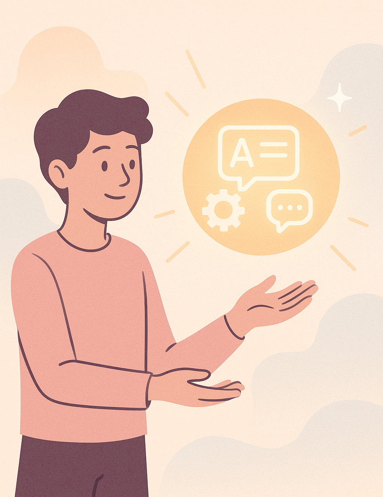
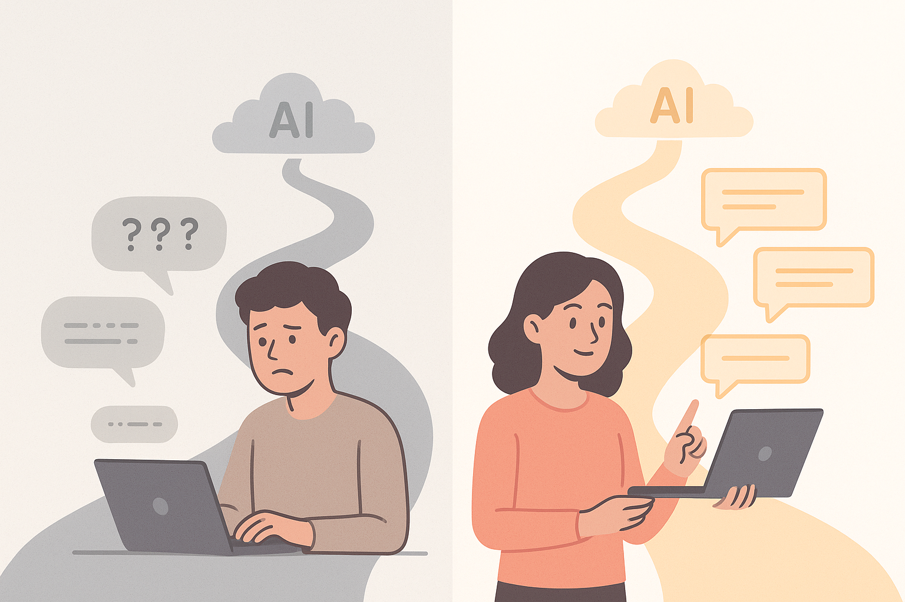

Effektives Prompt Engineering – leicht erklärt.
Wie du mit ChatGPT, Claude & Co. das Beste aus KI herausholst.
1 Die neue Superkraft: Warum KI dein Leben verändern kann
1.1 Die neue Sprache der digitalen Welt
Stell dir vor, du hättest eine Superkraft. Nicht die Art, die man aus Comics kennt – keine Laseraugen, kein Fliegen, kein Teleportieren. Sondern etwas Realeres, etwas, das du sofort nutzen könntest:
➡️ Die Fähigkeit, mit jeder künstlichen Intelligenz so zu sprechen, dass sie für dich alles Mögliche erledigt – schnell, kreativ, zuverlässig.
Diese Superkraft nennt sich Prompting. Und sie ist gerade dabei, eine der wichtigsten Skills der nächsten Jahrzehnte zu werden – besonders für junge Menschen wie dich, die in einer Welt aufwachsen, in der KI überall ist: in Schulen, Unis, Jobs, Apps, Games, Musik, Code, Videos, Bildern … und sogar bei Dingen, die du im Alltag kaum bemerkst.
Willkommen im Kapitel 1:
Warum Prompt Engineering dein Schlüssel zur Zukunft ist – und warum dieses Buch dich dort hinführt.
1.2 Die Welt hat sich geändert – dein Werkzeugkasten auch
Vor ein paar Jahren war KI noch etwas, das nur in Laboren existierte. Heute arbeiten Millionen Menschen täglich mit ChatGPT, Claude, Gemini, Perplexity oder Midjourney. Lehrer nutzen KI für Unterrichtsmaterial, Schüler für Aufgaben, Gamer für Mods, Content Creators für Ideen und Programmierer für Code-Analyse.
Aber die meisten Menschen machen dabei denselben Fehler:
Sie nutzen KI wie eine Suchmaschine – statt wie einen digitalen Experten.
Das Ergebnis?
👉 KI-Antworten wirken oft zufällig.
👉 Ergebnisse sind mal gut, mal unbrauchbar.
👉 Texte wirken generisch.
👉 Man bekommt nur „durchschnittliche“ Ideen.
👉 Aufgaben dauern trotzdem lange. Der Grund ist einfach:
Die Qualität deines Outputs ist immer nur so gut wie die Qualität deines Inputs.
Schlechte Prompts = schlechte Antworten.
Gute Prompts = Superkräfte.
Prompting ist wie eine neue Sprache. Sobald du sie sprichst, ändert sich alles.
Dieses Kapitel zeigt dir warum.

1.3 Was Prompting WIRKLICH ist (und was nicht)
Viele glauben immer noch, Prompting sei:
❌ „Fragen in eine Chatbox tippen“
❌ „Zwei Sätze schreiben und schauen, was rauskommt“
❌ „Einfach ein bisschen ausprobieren“
Weit gefehlt.
Prompting ist viel eher wie:
✓ Programmieren mit natürlicher Sprache
✓ Kommunizieren mit einem extrem leistungsfähigen Expertensystem
✓ Denken in klaren Strukturen
✓ Kreativität + Logik + klare Anweisungen
✓ Eine Methode, Probleme in Schritte zu zerlegen
Das Schöne daran?
Jeder kann es lernen. Auch ohne Mathe. Auch ohne Technik. Auch ohne Vorkenntnisse.
Wenn du weißt, wie KI denkt und worauf sie reagiert, kannst du alles beeinflussen:
- Ton
- Länge
- Stil
- Struktur
- Genauigkeit
- Kreativität
- Komplexität
- Format
- Perspektive
- Rollenbilder
- Zwischenschritte
- Qualitätskontrolle
Prompting ist die neue Form von Digital Literacy.
Wer KI bedienen kann, hat Macht.
Wer sie gut bedienen kann, hat einen Vorsprung.
Wer sie außergewöhnlich nutzt, hat eine Zukunft, die andere nicht erreichen.
1.4 Wofür junge Menschen Prompting heute schon nutzen
Die Zielgruppe für dieses Buch bist du – Schüler, Studentin, Azubi, Gamer, Creator, junger Berufseinsteiger. Menschen, die ihre Zukunft gerade formen.
Und genau hier wird’s spannend: KI eröffnet dir Chancen, die vorher nur Profis hatten.
Hier ein paar Beispiele, wie junge Menschen KI bereits nutzen:
Schule & Studium
- Erklärungen in einfacher Sprache
- Zusammenfassungen von langen Texten
- Lernkarten, Quizze, Prüfungsaufgaben
- Essays, Gliederungen, Argumente
- Übersetzungen und Grammatikchecks
- Recherche-Assistenz
Karriere & Ausbildung
- Lebenslauf & Bewerbung
- Vorbereitung auf Vorstellungsgespräche
- Praktika-Suche
- Business-Ideen und Pitch-Decks
- Recherche zu Branchen oder Berufen
Kreativität
- Kurzgeschichten
- Songtexte
- Bild-Prompts
- Videoskripte
- Social-Media-Content
- Character-Designs
- Game-Ideen oder Quest-Texte
Technik & Coding
- Python lernen
- Fehler bei Code finden
- Websites bauen
- Apps prototypen
- Daten analysieren
- Mathe erklären lassen
Life Skills
- Trainingspläne
- Essenspläne
- Finanzwissen
- Zeitmanagement
- Lernstrategien
Und das ist nur der Anfang.
1.5 Warum du KI nicht „probieren“, sondern „beherrschen“ solltest
In fünf Jahren wird die Welt zwei Arten von Menschen kennen:
Typ A: KI-Benutzer
Sie tippen zufällige Fragen. Sie bekommen zufällige Antworten. Ihre Ergebnisse sind … okay.
Typ B: KI-Power-User (das wirst du)
Sie nutzen:
- Rollen
- Struktur
- Beispiele
- Kontext
- Chain-of-Thought
- Mehrstufige Prompts
- Qualitätskontrollen
- kreative Strategien
- Storytelling-Prompts
Ihre Ergebnisse sind:
- klar
- tiefgehend
- professionell
- schnell
- zuverlässig
- beeindruckend
Der Unterschied ist enorm.
Prompting macht aus einem Chatbot ein Superwerkzeug.
Und genau dieses Buch zeigt dir Schritt für Schritt, wie du zu Typ B wirst.
1.6 Wie dieses Buch funktioniert
Dieses Buch folgt einer klaren Lerndramaturgie:
🌟 Teil I – Der Einstieg: Warum Prompt Engineering dein neues Superpower-Skill ist
Warum Prompting wichtig ist, wie KI denkt, was du mit ihr alles machen kannst.
👉 Kapitel 1 – Die neue Superkraft: Warum KI dein Leben verändern kann
👉 Kapitel 2 – Wie KI denkt (aber nicht wirklich denkt)
👉 Kapitel 3 – Deine ersten Prompts: Schnell Erfolge sehen
🌟 Teil II – Die Grundlagen: So funktioniert gutes Prompt Engineering
Klare Grundlagen:
Wie schreibt man gute Prompts?
Was macht ein Prompt aus?
Beispiele, Rollen
Multi-Step-Prompting
👉 Kapitel 4 – Die Bausteine eines perfekten Prompts
👉 Kapitel 5 – Klare Anweisungen, klare Ergebnisse: Instruction Prompting
👉 Kapitel 6 – Beispiele wirken Wunder: In-Context Learning erklärt
👉 Kapitel 7 – Komplexe Aufgaben in Mini-Schritte zerlegen: Chain Prompting
🌟 Teil III – Vom guten Prompt zum genialen Prompt
Chain-of-thought, Welche Fehler vermeiden?, Storytelling, Feedback-Loops.
👉 Kapitel 8 – Lass die KI erst denken: Chain-of-Thought für Einsteiger
👉 Kapitel 9 – Kreativer arbeiten: Schreib-, Ideen- und Lernprompts
👉 Kapitel 10 – Fehler finden & verbessern: Output Verification
👉 Kapitel 11 – Regeln! Grammatik, Struktur und Format steuern
🌟 Teil IV – Prompting im echten Leben: Projekte, Hacks & Power-Skills
Prompting für Lernen, Karriere, Coding, Kreativität, Business, Alltag.
👉 Kapitel 12 – Schule & Studium: KI als Lern-Turbo
👉 Kapitel 13 – Kreativprojekte: KI für Texte, Videos & Social Media
👉 Kapitel 14 – Coding mit KI: Dein persönlicher Mini-Programmiercoach
👉 Kapitel 15 – Recherche, Faktencheck & Wissenschaft
👉 Kapitel 16 – Produktiver Alltag mit KI: Die besten Life-Hacks
🌟 Teil V – Deine KI-Zukunft: Selbstständiges Arbeiten & Verantwortung
Wie du KI fair, sicher und verantwortungsbewusst nutzt.
👉 Kapitel 17 – Fair, sicher & verantwortungsvoll mit KI umgehen
👉 Kapitel 18 – Der KI-Masterplan: Dein persönliches Prompt-Portfolio
Du wirst nicht nur Anleitungen bekommen, sondern:
- echte Stories
- viele Beispiele
- Aufgaben zum Mitmachen
- Schritt-für-Schritt-Hilfen
- Checklisten
- kleine Challenges
- sofort nutzbare Prompts
1.7 Warum KI ohne Storytelling schlechter funktioniert
Eine Sache, die du sofort lernen wirst:
👉 KI antwortet besser, wenn du ihr eine Geschichte gibst.Warum?
✓ Geschichten schaffen Kontext
✓ Geschichten geben eine Rolle
✓ Geschichten setzen Ziele
✓ Geschichten geben Struktur
✓ Geschichten aktivieren das „Verständnis“ des Modells
Beispiel:
Bleiben wir kurz bei Schule.
Schlechter Prompt:
„Erklär mir Photosynthese.“
Guter Prompt:
„Erkläre mir Photosynthese so, als wäre ich ein Schüler, der sich für Pflanzen interessiert, aber schnell den Überblick verliert. Nutze eine kleine Geschichte von einer Pflanze, die Sonnenlicht sammelt, und erklär den Prozess Schritt für Schritt.“
Die zweite Version:
- hat Ton
- hat Ziel
- passt sich an dich an
- nutzt Storytelling
- ist klarer
- führt zu viel besseren Ergebnissen
Und genau solche Grundlagen wirst du in diesem Buch immer wieder anwenden.

1.8 Dein erster Aha-Moment: KI ist nicht magisch – sie ist formbar
Viele denken, KI sei eine Black Box.
„Sie macht einfach irgendwas.“
„Sie entscheidet das selbst.“
„Sie ist intelligent.“
„Sie weiß, was ich meine.“
Nein.
Sie weiß nicht, was du meinst.
Aber sie kann unglaublich gut schätzen, was du meinen könntest – wenn du ihr gute Hinweise gibst.
Ein Prompt ist kein Wunschzettel.
Ein Prompt ist eher:
- ein Bauplan
- eine Anleitung
- ein Mini-Programm
- ein Dialograhmen
- ein Experiment
Und je konkreter, strukturierter und sinnvoller dein Input, desto besser ihr Output.
Wenn du das einmal verstanden hast, fühlt es sich an wie ein Skill-Upgrade in einem Videospiel:
🎮 Level 1: Fragen stellen
🎮 Level 5: Rollen + Beispiele + Struktur
🎮 Level 10: Multi-Step-Reasoning
🎮 Level 20: KI als Co-Pilot
🎮 Level 30: Eigene Prompt-Frameworks
🎮 Level 50: KI als kreativer Partner
🎮 Level 100: Du baust Systeme und Workflows, die andere nicht einmal kennen
Dieses Buch bringt dich auf den Weg dorthin – Schritt für Schritt, Story für Story.
1.9 Warum dieses Buch keine Theorie für Erwachsene ist
Es gibt viele KI-Bücher. Aber fast alle haben drei Probleme:
- Sie sind für Erwachsene geschrieben.
- Sie sind zu technisch.
- Sie erklären KI, aber nicht wie man sie benutzt.
Dieses Buch ist anders:
- Es ist deine Perspektive.
- Es nutzt Beispiele aus Schule, Social Media, Kreativität, Games.
- Es zeigt dir Tricks, die du heute anwenden kannst.
- Keine Mathematik.
- Keine trockene Theorie.
- Alles sofort nutzbar.
Du wirst nicht nur verstehen, was KI kann. Du wirst lernen, sie zu steuern.
Du weißt jetzt:
- Warum Prompting eine Zukunftsskill ist
- Für wen das Buch geschrieben wurde (für dich!)
- Wofür KI schon heute genutzt wird
- Warum gute Prompts entscheidend sind
- Warum Storytelling so wichtig ist
- Wie dieses Buch aufgebaut ist
- Und warum du am Ende ein echter KI-Power-User sein wirst
1.10 Wie KI deinen Alltag leichter macht – echte Beispiele, die DU verwenden kannst
In den bisherigen Abschnitten hast du gesehen, warum KI gerade die Welt verändert und warum es sich lohnt, früh dabei zu sein. Jetzt geht’s in die Praxis. Keine Theorie, keine trockenen Definitionen – nur Dinge, die du heute sofort selbst ausprobieren kannst.
Dabei wirst du vielleicht etwas Überraschendes feststellen:
👉 Die besten KI-Anwendungen sind oft die einfachsten.
Viele Jugendliche glauben, man müsse erst programmieren oder 100+ Fachbegriffe kennen, bevor man KI “richtig” nutzen kann. Aber das Gegenteil ist wahr: KI hilft dir schon heute bei Aufgaben, die du sowieso erledigen musst.
Hier ein paar Beispiele aus dem echten Alltag:
👉 Beispiel 1: Schule – endlich strukturierter lernenNimm an, du musst ein Thema für die nächste Klassenarbeit verstehen, sagen wir: “Fotosynthese”.
Du könntest jetzt gemütlich einen 10-seitigen Wikipedia-Text lesen. Oder du schreibst einfach:
„Erkläre mir Fotosynthese so, dass ich es wie ein 14-Jähriger verstehe. Bitte in 5 kurzen Punkten, mit einem Merksatz am Ende.“
Und schon hast du eine Erklärung, die verständlich ist – für dich, nicht für Biologie-Professoren.
👉 Beispiel 2: Texten – besser schreiben, ohne dass es künstlich klingtVielleicht musst du eine Bewerbung für ein Praktikum erstellen. Das ist für viele mega unangenehm – aber KI kann helfen. Kein Copy-Paste, kein fertiges KI-Schreiben. Sondern:
„Hier ist mein Text. Bitte mach ihn höflicher, aber trotzdem authentisch und jugendlich. Verändere den Inhalt nicht.“
Und KI macht’s verständlicher, runder, professioneller – aber immer noch du.
👉 Beispiel 3: ChatGPT als persönlicher TutorEgal ob Mathe, Musiktheorie oder VWL – KI kann dir Dinge erklären, die Lehrer manchmal nicht so klar formulieren können.
„Erklär mir das Thema Angebot & Nachfrage so, als würdest du es meinem 16-jährigen Ich erklären. Gib mir zuerst ein Beispiel, das mit Sneakern zu tun hat.“
Je mehr Bezug zu deinem eigenen Leben drinsteckt, desto besser versteht man’s.
👉 Beispiel 4: KI als Brainstorming-BuddyViele hassen die leere Seite vor einem Projekt:
„Mach mal ein kreatives Projekt über XY.“
– Okay, aber… wie?
Dann ist KI wie ein Teammitglied:
„Gib mir 10 kreative Projektideen über Nachhaltigkeit für ein Schulprojekt. Bitte mit Aufwand (gering/mittel/hoch) und mit einem coolen Titel.“
Das ist kein Spicken – es ist wie Brainstorming mit jemandem, der nie müde wird.
1.11 Die zwei größten Fehler, die fast alle am Anfang machen
Zum Einstieg ein trostloses Geheimnis:
Fast alle machen am Anfang dieselben Fehler – und das ist absolut okay.
Die gute Nachricht: Du kannst sie sofort vermeiden.
👉 Fehler Nr. 1: Ein-Wort-PromptsViele schreiben nur:
- „Zusammenfassung?“
- „Erklärung?“
- „Mach das besser.“
Die KI versucht dann zwar, dir zu helfen – aber du gibst ihr einfach zu wenig Informationen.
Der Trick lautet:
👉 KI kann fast alles – wenn du ihr sagst, was du willst.
Ein guter Prompt ist wie das Briefing eines Regisseurs: klar, konkret, kurz.
Noch nicht perfekt? Kein Stress. Dieses Buch zeigt dir, wie du bessere Prompts schreibst, ohne kompliziert zu werden.
👉 Fehler Nr. 2: KI als „Antwortmaschine“ statt als Partner zu nutzenViele fragen:
„Was ist die richtige Antwort?“
Doch KI ist viel besser geeignet für:
- Gedankenaustausch
- Ideenbewertung
- Beispiele
- Lernhilfen
- Strukturvorschläge
- Feedback
ChatGPT ist kein Google-Ersatz.
Es ist eine Art intelligenter Sparringspartner, der dir beim Denken hilft.
1.12 Warum eigene Prompts viel wichtiger sind als perfekte Prompts
Vielleicht fragst du dich:
„Muss ich lernen, die besten Prompts der Welt zu schreiben?“
Nein.
Du musst lernen, die besten Prompts für DICH zu schreiben.
Jeder Mensch denkt anders. Du hast deine eigenen Beispiele, deinen eigenen Humor, deinen eigenen Sprachstil.
Eine 14-jährige Schülerin braucht ganz andere Prompts als ein 25-jähriger Informatikstudent.
Darum geht es in diesem Buch:
👉 Wir zeigen dir, wie du Prompts entwickelst, die zu dir passen.
👉 Wie du sie persönlich machst.
👉 Wie du sie in echte Ergebnisse verwandelst.Und keine Sorge: Viele gute Prompts bestehen nur aus 2–4 Sätzen.
1.13 Warum KI so gut funktioniert: Der simple Kern dahinter
KI wirkt wie Magie, aber sie basiert auf einem einfachen Prinzip:
👉 Modelle wie ChatGPT haben gelernt, Sprache so zu verstehen und weiterzuführen, wie Menschen es tun.
Sie berechnen Wahrscheinlichkeiten, Muster, Bedeutungen.
Das klingt kompliziert – aber für dich heißt das:
- Du musst nicht programmieren.
- Du musst keine Mathe verstehen.
- Du musst keine Theorie lernen.
Du musst nur klar ausdrücken, was du willst.
Der Rest passiert im Hintergrund.
1.14 Das ist wichtig: KI ersetzt dich NICHT – sie augmentiert dich
Viele haben Angst:
„Wird KI meinen Job ersetzen?“
Vielleicht kennst du die Diskussion aus Social Media.
Die Wahrheit ist viel spannender:
👉 KI ersetzt nicht Menschen. KI ersetzt Menschen, die keine KI benutzen.
Wenn du lernst, wie man KI sinnvoll nutzt, bist du anderen mehrere Schritte voraus.
Im Studium, in Bewerbungen, bei Projekten – und im späteren Berufsleben sowieso.
KI nimmt dir nicht Kreativität weg.
KI gibt dir zusätzliche Fähigkeiten:
- schneller denken
- Textideen entwickeln
- schwierige Themen besser verstehen
- bessere Entscheidungen treffen
- Lernblockaden lösen
- Projekte strukturieren
KI ist wie ein Superhelden-Anzug.
Du bist Iron Man – sie ist der Anzug.
Funktioniert nur zusammen.
1.15 Eine kleine Story: Das ChatGPT-Experiment
Eine Lehrerin aus Finnland hat ihren Schülern folgende Aufgabe gegeben:
“Schreibt eine Erklärung über Erneuerbare Energien für 10-Jährige.”
Dann hat sie es fair gemacht:
- Hälfte der Klasse schreibt selbst
- andere Hälfte nutzt KI als Unterstützung
Das Ergebnis?
Die KI-Gruppe hatte nicht nur bessere Texte – sondern auch ein besseres Verständnis des Themas.
Warum?
Weil KI beim Lernen hilft:
- klare Strukturen
- gute Beispiele
- Wiederholungen
- „Erklär’s mir nochmal anders“-Option
- keine Angst vor dummen Fragen
Du glaubst nicht, wie mächtig das ist.
1.16 Was du für den Rest des Buches brauchst
Nicht viel.
Nur drei Dinge:
👉 NeugierWenn du dieses Kapitel gelesen hast, hast du die wichtigste Zutat bereits.
👉 Keine Angst vor FehlernFehler sind beim Prompt Engineering völlig normal.
Du probierst etwas, die Antwort passt nicht, du versuchst es anders.
Es ist ein Gespräch – kein Test.
👉 Spaß an ExperimentenViele der besten Prompts entstehen durch Ausprobieren.
1.17 Was im nächsten Kapitel auf dich wartet
Kapitel 2 wird der Moment, in dem wir den Vorhang lüften:
👉 Was ist ein **Prompt** wirklich?
👉 Welche Arten gibt es?
👉 Warum funktioniert ein Prompt – und warum manchmal nicht?
👉 Wie schreibst du deinen ersten guten Prompt, der **sofort Ergebnisse bringt**?Du wirst merken:
Es ist einfacher als du denkst.
Und du wirst besser darin, je mehr du ausprobierst.